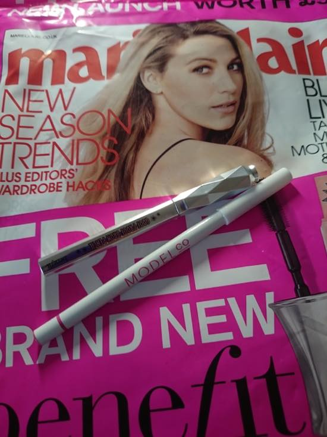
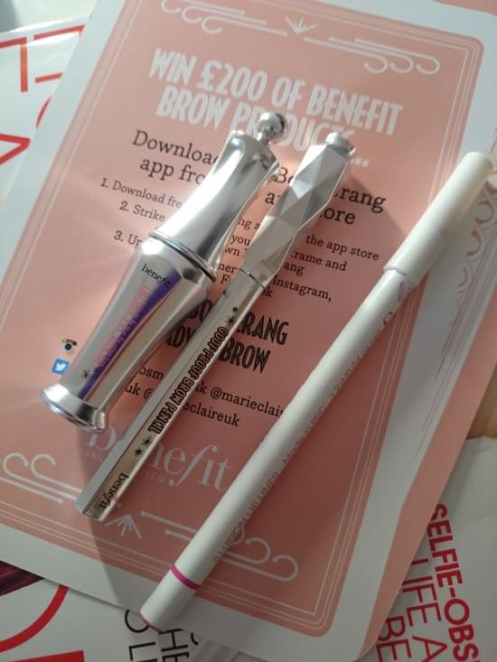
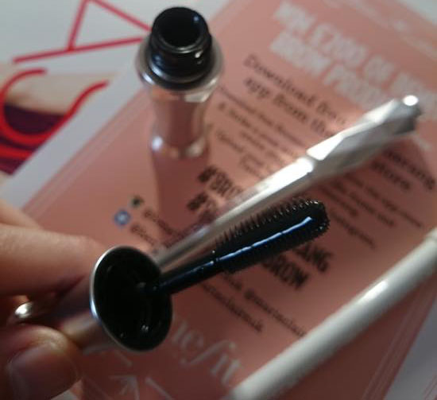
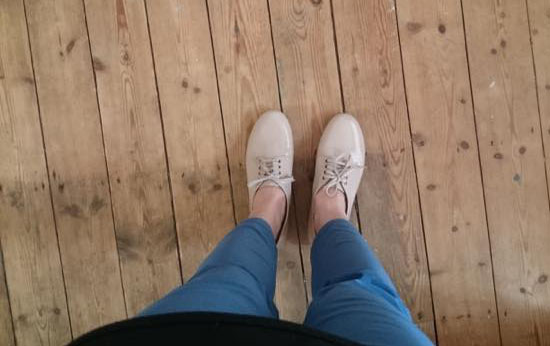

베네피트 NEW 브로우 컬렉션 여기저기 행사도 많이하고 잡지부록으로도 많이 나왔더라구요
전에 브로우 펜슬이 부록이길래 하나 구입하고 이번엔 마리끌레르에 세팅젤이 들어있길래(....) 잡지를 사왔습니다 :p
그밑에 하얀펜슬은 립라이너
대부분 그달 잡지에 3-4가지 종류 부록이 들어있어서(예를들어 동일브랜드 마스카라, 립글로그, 립라이너, 아이라인 등) 골라 구입할수 있는데
립글로스인줄 알고 집어와서 뜯어봤더니 립라이너였다능........OTL

잡지는 부록땜에 사는거죠 암요 ㅎㅎ

레디, 셋, 브로우 눈썹 세팅 젤 - 이라는 이름이군요
매번 궁금함을 못참고 사봅니다 ^^;;;;

세일기간동안에는 정말 막판에막판까지 열심히 지릅니다 ㅡㅡ;;;
이것도 클락스 / 가격이 느므싸서........£16 에 구매했습니다. / 스킨톤도 첨 사봐요
이번엔 평소 구매안하던 스타일을 많이사봤습니당.
갑자기 슈즈구매에 의욕이 빠방해져서 찾아보기도 정말 열심히 찾아보고 위시리스트만 꾸역꾸역 늘려놨습니다 ㅡㅡ;;;
일하다가 스트레스 무진장 받는게 있었는데 확실히 쇼핑테라피는 존재합니다. 이것저것 지르고 날씨좋은날 새신발 신고나가면 급 빵끗 :)
근데 꺼지기도 금새 꺼지는거 같아요 ^^;;; 딱 손에 넣는순간 우헤헤 이제 이건내꺼. 이제 어디 다음걸 찾아볼까...
뭐 이런 루트가 무한반복 되어서 ㅡㅡ;;;
이 이야기를 물괴기 언니한테 했더니
- 단어 몇개 바꾸면. 완전 나쁜 여잔데 / 넌 내소유니 다음껄 찾겠어 이런거 아냐 / 쏘 쿨~~~
이라고 ㅋㅋㅋㅋㅋㅋㅋㅋㅋㅋㅋㅋㅋㅋㅋㅋㅋㅋ
그리고 ASOS에서 배송이 오고있습니다 럴럴~
6월7월 제정신이 아니에요 ^^;;;